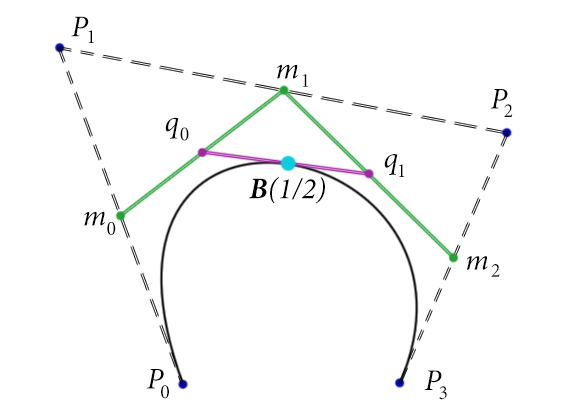
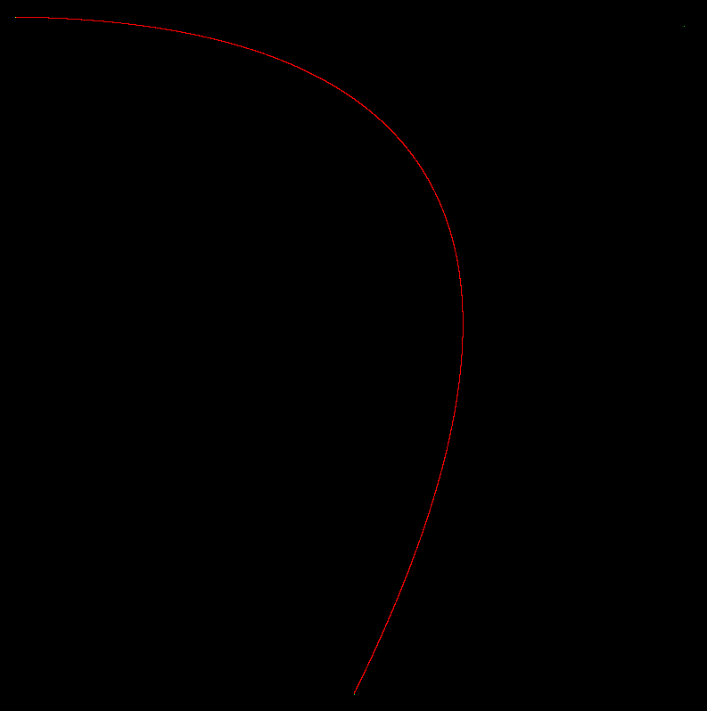

本文主要关注的是公式的推导。
在讲贝塞尔曲线之前先复习下组合数学。
组合数学
排列 permutation
注意，排列的英文是permutation，这个词也就是线性代数里的“置换”。联想置换矩阵的概念，就可以近似理解“排列”的意义。
permutation的公式是：
\[ P(n,k) = P_{n}^{k} = \frac {n!}{(n-k)!} \]
含义：从n个数取出某k个数总共有多少种排列。
所以，排列是有顺序的。
组合 combination
组合这个东西可以用“排列”来理解，比如对于某3个不同的数a、b、c，有\[ P_{3}^{3} = \frac {3!}{(3-3)!} = 6 \]种排列: abc、acb、bac、bca、cab、cba，然而，组合数只有一个，也就是[a、b、c]。
所以，组合是没有顺序的。
combination的公式是：
\[ C(n,k) = C_{n}^{k} = \frac { P_{n}^{k} } { P_{k}^{k} } = \frac {n!}{k!(n-k)!} , 0 < k <= n\]
性质1：
\( C_{n}^{k} = \frac {n!}{k!(n-k)!} \)
\( = \frac {n!}{(n-(n-k))!(n-k)!} \)
\( = \frac {n!}{(n-k)!(n-(n-k))!} \)
\( = C_{n}^{n-k} \)
性质2：
\[ C_{n}^{k} = \frac {n!}{k!(n-k)!} = 0 【 k <= 0 ， k > n】 \]
(当k<=0或k>n时，右边的式子会出现负数的阶乘。负数阶乘在组合数公式的计算中，可以认为等于0)
combination很重要，比如说二项式定理里的展开式就用到了它：
\[ (a+b)^{n} = \sum_{r=0}^{n}C_{n}^{r}a^{n-r}b^{r} \]
combination还有一条公式要注意下：
\[ C_{n}^{k} = C_{n-1}^{k-1} + C_{n-1}^{k} , 0 < k < n \]
顺便给个简单证明：
\( C_{n-1}^{k-1} + C_{n-1}^{k} = \)
\( \frac {(n-1)!}{(n-1-(k-1))!(k-1)!} + \frac {(n-1)!}{(n-1-k)!k!} = \)
\( \frac {(n-1)!}{(n-k)!(k-1)!} + \frac {(n-1)!}{(n-1-k)!k!} = \)
\( \frac {k(n-1)!}{k(n-k)!(k-1)!} + \frac {(n-k)(n-1)!}{(n-k)(n-1-k)!k!} = \)
\( \frac {k(n-1)!}{(n-k)!k!} + \frac {(n-k)(n-1)!}{(n-k)!k!} = \)
\( \frac {k(n-1)!+(n-k)(n-1)!}{(n-k)!k!} = \)
\( \frac {n(n-1)!}{(n-k)!k!} = \frac {n!}{(n-k)!k!} = C_{n}^{k} \)
贝塞尔曲线
定义
给定n个控制点\(P_{0},P_{1},\cdots ,P_{n}\)，贝塞尔曲线的公式如下：
\[ P(t) = \sum_{i=0}^{n}P_{i}B_{i,n}(t) , t\in [0,1] \]
其中的\( B_{i,n}(t) \)叫Bernstein polynomial（伯思斯坦多项式），定义如下：
\[ B_{i,n}(t) = C_{n}^{i}t^{i}(1-t)^{n-i} = \frac {n!}{i!(n-i)!}t^{i}(1-t)^{n-i} 【i=0,1,\cdots ,n】 \]
Bézier曲线的特性
特性1：改变单个控制点会引起整条曲线的改变。
Bernstein polynomial的特性
递归性
\[ B_{i,n}(t) = (1-t)B_{i,n-1}(t) + tB_{i-1,n-1}(t) 【i=0,1,\cdots ,n】 \]
证明：
\( B_{i,n}(t) \)
\( = C_{n}^{i}t^{i}(1-t)^{n-i} \)
\( = (C_{n-1}^{i-1} + C_{n-1}^{i})t^{i}(1-t)^{n-i} \)
\( = C_{n-1}^{i-1}t^{i}(1-t)^{n-i} + C_{n-1}^{i}t^{i}(1-t)^{n-i} \)
\( = (1-t)C_{n-1}^{i}t^{i}(1-t)^{(n-1)-i} + tC_{n-1}^{i-1}t^{i-1}(1-t)^{(n-1)-(i-1)} \)
\( = (1-t)B_{i,n-1}(t) + tB_{i-1,n-1}(t) \)
归一性
\[ \sum_{i=0}^{n}B_{i,n}(t) \equiv 1 【t\in (0,1)】 \]
证明：
根据二项式定理有：
\[ \sum_{i=0}^{n}B_{i,n}(t) \] \[ = \sum_{i=0}^{n}C_{n}^{i}t^{i}(1-t)^{n-i} \] \[ [(1-t)+t]^{n} \equiv 1 \]
Partition of Unity
\[ \sum_{i=0}^{n}B_{i,n}(t) = \sum_{i=0}^{n-1}B_{i,n-1}(t) = 1 \]
证明:
利用递归公式，有：
\( \sum_{i=0}^{n}B_{i,n}(t) \)
\( = \sum_{i=0}^{n}[(1-t)B_{i,n-1}(t) + tB_{i-1,n-1}(t)] \)
\( = \sum_{i=0}^{n}[(1-t)B_{i,n-1}(t)] + \sum_{i=0}^{n}[tB_{i-1,n-1}(t)] \)
\( = (1-t)\sum_{i=0}^{n}[B_{i,n-1}(t)] + t\sum_{i=0}^{n}[B_{i-1,n-1}(t)] \)
\( = (1-t)[\sum_{i=0}^{n-1}B_{i,n-1}(t) + B_{n,n-1}(t) ] + t[\sum_{i=1}^{n}B_{i-1,n-1}(t) + B_{-1,n-1}(t) ] \)
因为:
\[ B_{n,n-1}(t) = C_{n-1}^{n}t^{n}(1-t)^{n-1-n} = 0 \]
\[ B_{-1,n-1}(t) = C_{n-1}^{-1}t^{-1}(1-t)^{(n-1)-(-1)} = 0 \]
(这里利用了上文提到的组合数公式性质2)
所以可简化为：
\( \sum_{i=0}^{n}B_{i,n}(t) \)
\( = (1-t)[\sum_{i=0}^{n-1}B_{i,n-1}(t)] + t[\sum_{i=1}^{n}B_{i-1,n-1}(t)] \)
\( = (1-t)[\sum_{i=0}^{n-1}B_{i,n-1}(t)] + t[\sum_{i=0}^{n-1}B_{i,n-1}(t)] \)
\( = (1-t+t)[\sum_{i=0}^{n-1}B_{i,n-1}(t)] \)
\( = \sum_{i=0}^{n-1}B_{i,n-1}(t) \)
对称性
\[ B_{i,n}(1 - t) = B_{n-i,n}(t) \]
证明：
由定义：
\[ B_{i,n}(t) = C_{n}^{i}t^{i}(1-t)^{n-i} \]
有：
\( B_{n-i,n}(t) = C_{n}^{n-i}t^{n-i}(1-t)^{n-(n-i)} \)
\( = C_{n}^{n-i}t^{n-i}(1-t)^{i} \)
\( = C_{n}^{i}t^{n-i}(1-t)^{i} \)
\( B_{i,n}(1 - t) = C_{n}^{i}(1 - t)^{i}(1-(1 - t))^{n-i} \)
\( = C_{n}^{i}(1 - t)^{i}t^{n-i} \)
\( = C_{n}^{i}t^{n-i}(1-t)^{i} \)
得证。
非负性
当 t = 0 时：
\[ B_{i,n}(0) = 0 , 【i > 0】\]
\[ B_{i,n}(0) = 1 , 【i = 0】\]
当 t = 1 时：
\[ B_{i,n}(0) = 0 , 【i > 0】\]
\[ B_{i,n}(0) = 1 , 【i = 0】\]
当 t= (0,1) 时：
\[ B_{i,n}(t) > 0 , 【i =0,1,2,\cdots ,n-1】\]
证明：把数值代入定义公式就可以了。
Bernstein基(Bernstein Basis)到幂基(Power Basis)的转换
由二项式定理：
\[ (a+b)^{n} = \sum_{r=0}^{n}C_{n}^{r}a^{n-r}b^{r} \]
得到：
\[ (1-t)^{n} = \sum_{r=0}^{n}C_{n}^{r}1^{n-r}(-t)^{r} = \sum_{r=0}^{n}C_{n}^{r}(-t)^{r}\]
所以：
\[ B_{i,n}(t) = C_{n}^{i}t^{i}(1-t)^{n-i} \]
\[ = C_{n}^{i}t^{i}\sum _{k=0}^{n-i}C_{n-i}^{k}(-t)^{k} \]
\[ = C_{n}^{i}t^{i}\sum _{k=0}^{n-i}C_{n-i}^{k}(-1)^{k}t^{k} \]
\[ = \sum _{k=0}^{n-i}C_{n}^{i}t^{i}C_{n-i}^{k}(-1)^{k}t^{k} \]
\[ = \sum _{k=0}^{n-i}C_{n}^{i}C_{n-i}^{k}(-1)^{k}t^{k+i} \]
这时设g = k + i ，则有 k = g - i，i = g - k，上式变成：
\[ = \sum _{g - i=0}^{n-(g-k)}C_{n}^{i}C_{n-i}^{g - i}(-1)^{g - i}t^{g} \]
\[ = \sum _{g=i}^{n-g+k}C_{n}^{i}C_{n-i}^{g - i}(-1)^{g - i}t^{g}\]
把g换成k，上式变成：
\[ = \sum _{k=i}^{n-k+k}C_{n}^{i}C_{n-i}^{k - i}(-1)^{k - i}t^{k} \]
\[ = \sum _{k=i}^{n}C_{n}^{i}C_{n-i}^{k - i}(-1)^{k - i}t^{k} \]
其中\(C_{n}^{i}C_{n-i}^{k - i}\)可以进一步简化：
\( C_{n}^{i} C_{n-i}^{k - i} \) \( = \frac {n!}{i!(n-i)!} \frac {(n-i)!}{(k-i)!((n-i)-(k-i))!} \)
\( = \frac {n!}{i!(n-i)!} \frac {(n-i)!}{(k-i)!((n-k)!} \)
\( = \frac {n!(n-i)!}{i!(n-i)!(k-i)!((n-k)!} \)
\( = \frac {n!}{i!(k-i)!((n-k)!} \)
\( = \frac {n!k!}{i!(k-i)!((n-k)!k!} \)
\( = \frac {n!}{k!(n-k)!} \frac {k!}{i!((k-i)!} \)
\( = C_{n}^{k} C_{k}^{i} \)
所以：
\[ \sum _{k=i}^{n}C_{n}^{i}C_{n-i}^{k - i}(-1)^{k - i}t^{k} = \sum _{k=i}^{n}C_{n}^{k} C_{k}^{i}(-1)^{k - i}t^{k} \]
综上:
\[ B_{i,n}(t) = \sum _{k=i}^{n}C_{n}^{k} C_{k}^{i}(-1)^{k - i}t^{k} \]
设\( b_{k,i} = C_{n}^{k} C_{k}^{i}(-1)^{k - i} \)
则上式变成：
\[ B_{i,n}(t) = \sum _{k=i}^{n}b_{k,i}t^{k} \]
展开后：
\[ B_{i,n}(t) = b_{i,i}t^{i} + b_{i+1,i}t^{i+1} + \cdots + b_{n,i}t^{n} \]
Bézier曲线的递推形式(de Casteljau算法)
前面讲的是Bézier曲线的曲线方程定义，现在介绍一个简单实用的算法:de Casteljau's Algorithm。
先分享我找到的一些演示程序：
http://myst729.github.io/bezier-curve/。
https://www.jasondavies.com/animated-bezier/。
以及油管上的:https://www.youtube.com/watch?v=YATikPP2q70。
递推公式如下：
\[ P_{i}^{k} =\begin {cases} P_{i} 【k=0】 \\ (1-t)P_{i}^{k-1}+tP_{i+1}^{k-1} 【k=1,2,\cdots ,n,i=0,1,\cdots ,n-k】 \end {cases} \]

以上图为例演示下这条公式：
因为有\( P_{0},P_{1},P_{2},P_{3} \)4个控制点，所以n的值是3(要减1)。
然后求该贝塞尔曲线在 t = 1/2时的坐标点B(1/2)的步骤如下：
k = 0时，\(i = 0,1,\cdots ,n-k = 0,1,2,3 \)，所以有:
\( P_{i}^{k=0} = P_{i} \)
\( P_{0}^{k=0} = P_{0} \)
\( P_{1}^{k=0} = P_{1} \)
\( P_{2}^{k=0} = P_{2} \)
\( P_{3}^{k=0} = P_{3} \)
k = 1时，\(i = 0,1,\cdots ,n-k = 0,1,2 \)，所以有:
\( P_{i}^{k=1} = (1-t)P_{i}^{1-1}+tP_{i+1}^{1-1} = (1-t)P_{i}^{0}+tP_{i+1}^{0} \)
\( P_{0}^{k=1} = (1-t)P_{0}^{0}+tP_{1}^{0} = 0.5P_{0} + 0.5P_{1} = m_{0} \)
\( P_{1}^{k=1} = (1-t)P_{1}^{0}+tP_{2}^{0} = 0.5P_{1} + 0.5P_{2} = m_{1} \)
\( P_{2}^{k=1} = (1-t)P_{2}^{0}+tP_{3}^{0} = 0.5P_{2} + 0.5P_{3} = m_{2} \)
k = 2时，\(i = 0,1,\cdots ,n-k = 0,1\)，所以有:
\( P_{i}^{k=2} = (1-t)P_{i}^{1}+tP_{i+1}^{1} \)
\( P_{0}^{k=2} = (1-t)P_{0}^{1}+tP_{1}^{1} = 0.5m_{0} + 0.5m_{1} = q_{0} \)
\( P_{1}^{k=2} = (1-t)P_{1}^{1}+tP_{2}^{1} = 0.5m_{1} + 0.5m_{2} = q_{1} \)
k = 3时，\(i = 0,1,\cdots ,n-k = 0\)，所以有:
\( P_{i}^{k=3} = (1-t)P_{i}^{2}+tP_{i+1}^{2} \)
\( P_{0}^{k=3} = (1-t)P_{0}^{2}+tP_{1}^{2} = 0.5q_{0} + 0.5q_{1} = B(1/2) \)
Bézier曲线的矩阵形式
由上上一节推导出来的2条式子：
\[ b_{k,i} = C_{n}^{k} C_{k}^{i}(-1)^{k - i} \]
\[ B_{i,n}(t) = \sum _{k=i}^{n}b_{k,i}t^{k} = b_{i,i}t^{i} + b_{i+1,i}t^{i+1} + \cdots + b_{n,i}t^{n} \]
可以推导出矩阵：
\[ \left[ \begin{matrix} B_{0,n}(t)&B_{1,n}(t)&\cdots &B_{n,n}(t)\\ \end{matrix} \right] \]
\[ = \left[ \begin{matrix} \sum _{k=0}^{n}b_{k,0}t^{k}&\sum _{k=1}^{n}b_{k,1}t^{k}&\cdots &\sum _{k=n}^{n}b_{k,n}t^{k}\\ \end{matrix} \right] \]
\[ = \left[ \begin{matrix} t^{0}&t^{1}&t^{2}&\cdots &t^{n}\\ \end{matrix} \right] \left[ \begin{matrix} b_{0,0}&0&0&\cdots &0\\ b_{1,0}&b_{1,1}&0&\cdots &0\\ b_{2,0}&b_{2,1}&b_{2,2}&\cdots &0\\ \vdots &\vdots &\vdots &\ddots &\vdots \\ b_{n,0}&b_{n,1}&b_{n,2}&\cdots &b_{n,n}\\ \end{matrix} \right] \]
再由Bézier曲线的公式：
\[ P(t) = \sum_{i=0}^{n}P_{i}B_{i,n}(t) , t\in [0,1] \]
有：
\[ P(t) = \left[ \begin{matrix} t^{0}&t^{1}&t^{2}&\cdots &t^{n}\\ \end{matrix} \right] \left[ \begin{matrix} b_{0,0}&0&0&\cdots &0\\ b_{1,0}&b_{1,1}&0&\cdots &0\\ b_{2,0}&b_{2,1}&b_{2,2}&\cdots &0\\ \vdots &\vdots &\vdots &\ddots &\vdots \\ b_{n,0}&b_{n,1}&b_{n,2}&\cdots &b_{n,n}\\ \end{matrix} \right] \left[ \begin{matrix} P^{0}\\ P^{1}\\ P^{2}\\ \vdots \\ P^{n}\\ \end{matrix} \right] \]
注意，中间的矩阵B是常量(取决于阶数):
n = 2时：
\( b_{k,i} = C_{2}^{k} C_{k}^{i}(-1)^{k - i} \)
\( b_{0,0} = C_{2}^{0} C_{0}^{0}(-1)^{0 - 0} = 1*1=1 \)
\( b_{1,0} = C_{2}^{1} C_{1}^{0}(-1)^{1 - 0} = 2*1*(-1)=-2 \)
\( b_{2,0} = C_{2}^{2} C_{2}^{0}(-1)^{2 - 0} = 1*1=1 \)
\( b_{1,1} = C_{2}^{1} C_{1}^{1}(-1)^{1 - 1} = 2*1=2 \)
\( b_{2,1} = C_{2}^{2} C_{2}^{1}(-1)^{2 - 1} = 1*2*(-1)=-2 \)
\( b_{2,2} = C_{2}^{2} C_{2}^{2}(-1)^{2 - 2} = 1*1=1 \)
\[ B = \left[ \begin{matrix} 1&0&0\\ -2&2&0\\ 1&-2&1\\ \end{matrix} \right] \]
n = 3时：
\[ B = \left[ \begin{matrix} 1&0&0&0\\ -3&3&0&0\\ 3&-6&3&0\\ -1&3&-3&1\\ \end{matrix} \right] \]
测试一下正确性
测试代码基于我正在开发中的renderer
#include "transform.hpp"
#include "geometry.hpp"
using namespace renderer;
int main(int argc, char ** argv){
Matrix3x3 P = {
20.f, 20.f, 0, //P0
770.f, 30.f, 0, //P1
400.f, 780.f, 0, //P2
};
Matrix3x3 B = {
1, 0, 0,
-2, 2, 0,
1, -2, 1,
};
Matrix3x3 BP = B * P;
typedef Matrix<MxN<float, 1, 3>> Matrix1x3;
cil::CImg<unsigned char> img(800, 800, 1, 3);
img.atXYZC(P[0], P[1], 0, 1) = 255;
img.atXYZC(P[3], P[4], 0, 1) = 255;
img.atXYZC(P[6], P[7], 0, 1) = 255;
for (float t = 0; t < 1; t += 0.0001f) {
Matrix1x3 T = { 1, t, t * t };
Matrix1x3 TBP = T * BP;
int x = int(TBP[0]);
int y = int(TBP[1]);
img.atXYZC(x, y, 0, 0) = 255;
}
img.display("");
return 0;
}

博主将十分感谢对本文章的任意金额的打赏^_^